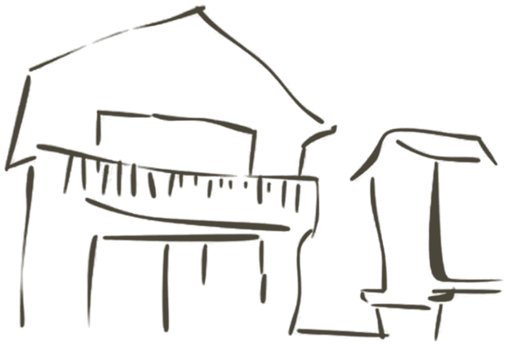
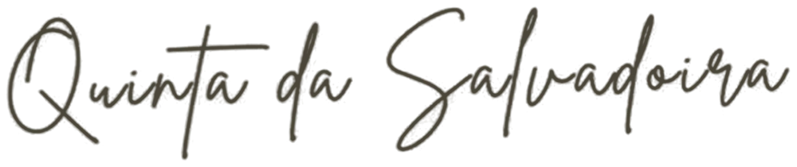

DEMO
Biolink de demonstração criado pela DD Digital para a Quinta da Salvadoira · conteúdo ilustrativo
Demonstração · Quinta da Salvadoira
Quinta da Salvadoira


ver desenhar outra vez
Casa Celeiro
,
um refúgio na natureza para toda a família
Reservar
no Airbnb
Reservar a Casa Celeiro
no Booking.com
Ver disponibilidade
Acompanhar
no Facebook
Quinta da Salvadoira
Versão de demonstração · DD Digital